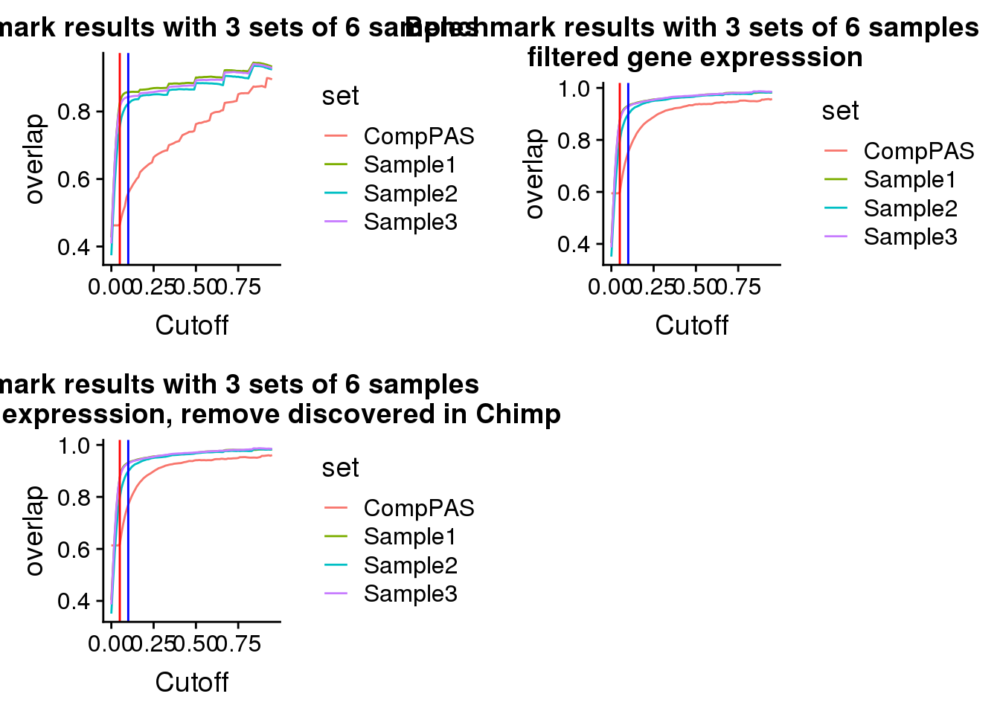

Use apaQTL Individuals to establish cutoffs
Briana Mittleman
1/16/2020
Last updated: 2020-01-21
Checks: 7 0
Knit directory: Comparative_APA/analysis/
This reproducible R Markdown analysis was created with workflowr (version 1.5.0). The Checks tab describes the reproducibility checks that were applied when the results were created. The Past versions tab lists the development history.
Great! Since the R Markdown file has been committed to the Git repository, you know the exact version of the code that produced these results.
Great job! The global environment was empty. Objects defined in the global environment can affect the analysis in your R Markdown file in unknown ways. For reproduciblity it’s best to always run the code in an empty environment.
The command set.seed(20190902) was run prior to running the code in the R Markdown file. Setting a seed ensures that any results that rely on randomness, e.g. subsampling or permutations, are reproducible.
Great job! Recording the operating system, R version, and package versions is critical for reproducibility.
Nice! There were no cached chunks for this analysis, so you can be confident that you successfully produced the results during this run.
Great job! Using relative paths to the files within your workflowr project makes it easier to run your code on other machines.
Great! You are using Git for version control. Tracking code development and connecting the code version to the results is critical for reproducibility. The version displayed above was the version of the Git repository at the time these results were generated.
Note that you need to be careful to ensure that all relevant files for the analysis have been committed to Git prior to generating the results (you can use wflow_publish or wflow_git_commit). workflowr only checks the R Markdown file, but you know if there are other scripts or data files that it depends on. Below is the status of the Git repository when the results were generated:
Ignored files:
Ignored: .DS_Store
Ignored: .Rhistory
Ignored: .Rproj.user/
Ignored: code/chimp_log/
Ignored: code/human_log/
Ignored: data/.DS_Store
Ignored: data/metadata_HCpanel.txt.sb-a5794dd2-i594qs/
Untracked files:
Untracked: ._.DS_Store
Untracked: Chimp/
Untracked: Human/
Untracked: analysis/CrossChimpThreePrime.Rmd
Untracked: analysis/DiffTransProtvsExpression.Rmd
Untracked: analysis/assessReadQual.Rmd
Untracked: analysis/diffExpressionPantro6.Rmd
Untracked: code/._ClassifyLeafviz.sh
Untracked: code/._Config_chimp.yaml
Untracked: code/._Config_chimp_full.yaml
Untracked: code/._Config_human.yaml
Untracked: code/._ConvertJunc2Bed.sh
Untracked: code/._CountNucleotides.py
Untracked: code/._CrossMapChimpRNA.sh
Untracked: code/._CrossMapThreeprime.sh
Untracked: code/._DiffSplice.sh
Untracked: code/._DiffSplicePlots.sh
Untracked: code/._DiffSplicePlots_gencode.sh
Untracked: code/._DiffSplice_gencode.sh
Untracked: code/._DiffSplice_removebad.sh
Untracked: code/._FindIntronForDomPAS.sh
Untracked: code/._GetMAPQscore.py
Untracked: code/._GetSecondaryMap.py
Untracked: code/._Lift5perPAS.sh
Untracked: code/._LiftFinalChimpJunc2Human.sh
Untracked: code/._LiftOrthoPAS2chimp.sh
Untracked: code/._MapBadSamples.sh
Untracked: code/._PAS_ATTAAA.sh
Untracked: code/._PASsequences.sh
Untracked: code/._PlotNuclearUsagebySpecies.R
Untracked: code/._QuantMergedClusters.sh
Untracked: code/._ReverseLiftFilter.R
Untracked: code/._RunFixLeafCluster.sh
Untracked: code/._RunNegMCMediation.sh
Untracked: code/._Snakefile
Untracked: code/._SnakefilePAS
Untracked: code/._SnakefilePASfilt
Untracked: code/._SortIndexBadSamples.sh
Untracked: code/._bed215upbed.py
Untracked: code/._bed2SAF_gen.py
Untracked: code/._buildIndecpantro5
Untracked: code/._buildIndecpantro5.sh
Untracked: code/._buildLeafviz.sh
Untracked: code/._buildLeafviz_leadAnno.sh
Untracked: code/._buildStarIndex.sh
Untracked: code/._chimpChromprder.sh
Untracked: code/._cleanbed2saf.py
Untracked: code/._cluster.json
Untracked: code/._cluster2bed.py
Untracked: code/._clusterLiftReverse.sh
Untracked: code/._clusterLiftReverse_removebad.sh
Untracked: code/._clusterLiftprimary.sh
Untracked: code/._clusterLiftprimary_removebad.sh
Untracked: code/._converBam2Junc.sh
Untracked: code/._converBam2Junc_removeBad.sh
Untracked: code/._extraSnakefiltpas
Untracked: code/._filter5percPAS.py
Untracked: code/._filterNumChroms.py
Untracked: code/._filterPASforMP.py
Untracked: code/._filterPostLift.py
Untracked: code/._fixExonFC.py
Untracked: code/._fixLeafCluster.py
Untracked: code/._fixLiftedJunc.py
Untracked: code/._fixUTRexonanno.py
Untracked: code/._formathg38Anno.py
Untracked: code/._formatpantro6Anno.py
Untracked: code/._getRNAseqMapStats.sh
Untracked: code/._hg19MapStats.sh
Untracked: code/._humanChromorder.sh
Untracked: code/._intersectLiftedPAS.sh
Untracked: code/._liftJunctionFiles.sh
Untracked: code/._liftPAS19to38.sh
Untracked: code/._liftedchimpJunc2human.sh
Untracked: code/._makeNuclearDapaplots.sh
Untracked: code/._makeSamplyGroupsHuman_TvN.py
Untracked: code/._mapRNAseqhg19.sh
Untracked: code/._mapRNAseqhg19_newPipeline.sh
Untracked: code/._maphg19.sh
Untracked: code/._maphg19_subjunc.sh
Untracked: code/._mediation_test.R
Untracked: code/._mergeChimp3prime_inhg38.sh
Untracked: code/._mergedBam2BW.sh
Untracked: code/._nameClusters.py
Untracked: code/._negativeMediation_montecarlo.R
Untracked: code/._numMultimap.py
Untracked: code/._overlapapaQTLPAS.sh
Untracked: code/._prepareCleanLiftedFC_5perc4LC.py
Untracked: code/._prepareLeafvizAnno.sh
Untracked: code/._preparePAS4lift.py
Untracked: code/._primaryLift.sh
Untracked: code/._processhg38exons.py
Untracked: code/._quantJunc.sh
Untracked: code/._quantJunc_TEST.sh
Untracked: code/._quantJunc_removeBad.sh
Untracked: code/._quantMerged_seperatly.sh
Untracked: code/._recLiftchim2human.sh
Untracked: code/._revLiftPAShg38to19.sh
Untracked: code/._reverseLift.sh
Untracked: code/._runCheckReverseLift.sh
Untracked: code/._runChimpDiffIso.sh
Untracked: code/._runCountNucleotides.sh
Untracked: code/._runFilterNumChroms.sh
Untracked: code/._runHumanDiffIso.sh
Untracked: code/._runNuclearDifffIso.sh
Untracked: code/._runTotalDiffIso.sh
Untracked: code/._run_chimpverifybam.sh
Untracked: code/._run_verifyBam.sh
Untracked: code/._snakemake.batch
Untracked: code/._snakemakePAS.batch
Untracked: code/._snakemakePASchimp.batch
Untracked: code/._snakemakePAShuman.batch
Untracked: code/._snakemake_chimp.batch
Untracked: code/._snakemake_human.batch
Untracked: code/._snakemakefiltPAS.batch
Untracked: code/._snakemakefiltPAS_chimp
Untracked: code/._snakemakefiltPAS_chimp.sh
Untracked: code/._snakemakefiltPAS_human.sh
Untracked: code/._submit-snakemake-chimp.sh
Untracked: code/._submit-snakemake-human.sh
Untracked: code/._submit-snakemakePAS-chimp.sh
Untracked: code/._submit-snakemakePAS-human.sh
Untracked: code/._submit-snakemakefiltPAS-chimp.sh
Untracked: code/._submit-snakemakefiltPAS-human.sh
Untracked: code/._subset_diffisopheno_Nuclear_HvC.py
Untracked: code/._subset_diffisopheno_Total_HvC.py
Untracked: code/._threeprimeOrthoFC.sh
Untracked: code/._transcriptDTplotsNuclear.sh
Untracked: code/._verifyBam4973.sh
Untracked: code/._verifyBam4973inHuman.sh
Untracked: code/._wrap_chimpverifybam.sh
Untracked: code/._wrap_verifyBam.sh
Untracked: code/._writeMergecode.py
Untracked: code/.snakemake/
Untracked: code/ClassifyLeafviz.sh
Untracked: code/Config_chimp.yaml
Untracked: code/Config_chimp_full.yaml
Untracked: code/Config_human.yaml
Untracked: code/ConvertJunc2Bed.err
Untracked: code/ConvertJunc2Bed.out
Untracked: code/ConvertJunc2Bed.sh
Untracked: code/CountNucleotides.py
Untracked: code/CrossMapChimpRNA.sh
Untracked: code/CrossMapThreeprime.sh
Untracked: code/CrossmapChimp3prime.err
Untracked: code/CrossmapChimp3prime.out
Untracked: code/CrossmapChimpRNA.err
Untracked: code/CrossmapChimpRNA.out
Untracked: code/DiffSplice.err
Untracked: code/DiffSplice.out
Untracked: code/DiffSplice.sh
Untracked: code/DiffSplicePlots.err
Untracked: code/DiffSplicePlots.out
Untracked: code/DiffSplicePlots.sh
Untracked: code/DiffSplicePlots_gencode.sh
Untracked: code/DiffSplice_gencode.sh
Untracked: code/DiffSplice_removebad.err
Untracked: code/DiffSplice_removebad.out
Untracked: code/DiffSplice_removebad.sh
Untracked: code/FilterReverseLift.err
Untracked: code/FilterReverseLift.out
Untracked: code/FindIntronForDomPAS.err
Untracked: code/FindIntronForDomPAS.out
Untracked: code/FindIntronForDomPAS.sh
Untracked: code/GencodeDiffSplice.err
Untracked: code/GencodeDiffSplice.out
Untracked: code/GetMAPQscore.py
Untracked: code/GetSecondaryMap.py
Untracked: code/HchromOrder.err
Untracked: code/HchromOrder.out
Untracked: code/JunctionLift.err
Untracked: code/JunctionLift.out
Untracked: code/JunctionLiftFinalChimp.err
Untracked: code/JunctionLiftFinalChimp.out
Untracked: code/Lift5perPAS.sh
Untracked: code/Lift5perPASbed.err
Untracked: code/Lift5perPASbed.out
Untracked: code/LiftClustersFirst.err
Untracked: code/LiftClustersFirst.out
Untracked: code/LiftClustersFirst_remove.err
Untracked: code/LiftClustersFirst_remove.out
Untracked: code/LiftClustersSecond.err
Untracked: code/LiftClustersSecond.out
Untracked: code/LiftClustersSecond_remove.err
Untracked: code/LiftClustersSecond_remove.out
Untracked: code/LiftFinalChimpJunc2Human.sh
Untracked: code/LiftOrthoPAS2chimp.sh
Untracked: code/LiftorthoPAS.err
Untracked: code/LiftorthoPASt.out
Untracked: code/Log.out
Untracked: code/MapBadSamples.err
Untracked: code/MapBadSamples.out
Untracked: code/MapBadSamples.sh
Untracked: code/MapStats.err
Untracked: code/MapStats.out
Untracked: code/MergeClusters.err
Untracked: code/MergeClusters.out
Untracked: code/MergeClusters.sh
Untracked: code/PAS_ATTAAA.err
Untracked: code/PAS_ATTAAA.out
Untracked: code/PAS_ATTAAA.sh
Untracked: code/PAS_sequence.err
Untracked: code/PAS_sequence.out
Untracked: code/PASsequences.sh
Untracked: code/PlotNuclearUsagebySpecies.R
Untracked: code/QuantMergeClusters
Untracked: code/QuantMergeClusters.err
Untracked: code/QuantMergeClusters.out
Untracked: code/QuantMergedClusters.sh
Untracked: code/Rev_liftoverPAShg19to38.err
Untracked: code/Rev_liftoverPAShg19to38.out
Untracked: code/ReverseLiftFilter.R
Untracked: code/RunFixCluster.err
Untracked: code/RunFixCluster.out
Untracked: code/RunFixLeafCluster.sh
Untracked: code/RunNegMCMediation.err
Untracked: code/RunNegMCMediation.sh
Untracked: code/RunNegMCMediationr.out
Untracked: code/RunPosMCMediation.err
Untracked: code/RunPosMCMediation.sh
Untracked: code/RunPosMCMediationr.out
Untracked: code/SAF215upbed_gen.py
Untracked: code/Snakefile
Untracked: code/SnakefilePAS
Untracked: code/SnakefilePASfilt
Untracked: code/SortIndexBadSamples.err
Untracked: code/SortIndexBadSamples.out
Untracked: code/SortIndexBadSamples.sh
Untracked: code/TotalTranscriptDTplot.err
Untracked: code/TotalTranscriptDTplot.out
Untracked: code/Upstream10Bases_general.py
Untracked: code/apaQTLsnake.err
Untracked: code/apaQTLsnake.out
Untracked: code/apaQTLsnakePAS.err
Untracked: code/apaQTLsnakePAS.out
Untracked: code/apaQTLsnakePAShuman.err
Untracked: code/bam2junc.err
Untracked: code/bam2junc.out
Untracked: code/bam2junc_remove.err
Untracked: code/bam2junc_remove.out
Untracked: code/bed215upbed.py
Untracked: code/bed2SAF_gen.py
Untracked: code/bed2saf.py
Untracked: code/bg_to_cov.py
Untracked: code/buildIndecpantro5
Untracked: code/buildIndecpantro5.sh
Untracked: code/buildLeafviz.err
Untracked: code/buildLeafviz.out
Untracked: code/buildLeafviz.sh
Untracked: code/buildLeafviz_leadAnno.sh
Untracked: code/buildLeafviz_leafanno.err
Untracked: code/buildLeafviz_leafanno.out
Untracked: code/buildStarIndex.sh
Untracked: code/callPeaksYL.py
Untracked: code/chimpChromprder.sh
Untracked: code/chooseAnno2Bed.py
Untracked: code/chooseAnno2SAF.py
Untracked: code/chromOrder.err
Untracked: code/chromOrder.out
Untracked: code/classifyLeafviz.err
Untracked: code/classifyLeafviz.out
Untracked: code/cleanbed2saf.py
Untracked: code/cluster.json
Untracked: code/cluster2bed.py
Untracked: code/clusterLiftReverse.sh
Untracked: code/clusterLiftReverse_removebad.sh
Untracked: code/clusterLiftprimary.sh
Untracked: code/clusterLiftprimary_removebad.sh
Untracked: code/clusterPAS.json
Untracked: code/clusterfiltPAS.json
Untracked: code/comands2Mege.sh
Untracked: code/converBam2Junc.sh
Untracked: code/converBam2Junc_removeBad.sh
Untracked: code/convertNumeric.py
Untracked: code/environment.yaml
Untracked: code/extraSnakefiltpas
Untracked: code/filter5perc.R
Untracked: code/filter5percPAS.py
Untracked: code/filter5percPheno.py
Untracked: code/filterBamforMP.pysam2_gen.py
Untracked: code/filterJuncChroms.err
Untracked: code/filterJuncChroms.out
Untracked: code/filterMissprimingInNuc10_gen.py
Untracked: code/filterNumChroms.py
Untracked: code/filterPASforMP.py
Untracked: code/filterPostLift.py
Untracked: code/filterSAFforMP_gen.py
Untracked: code/filterSortBedbyCleanedBed_gen.R
Untracked: code/filterpeaks.py
Untracked: code/fixExonFC.py
Untracked: code/fixFChead.py
Untracked: code/fixFChead_bothfrac.py
Untracked: code/fixLeafCluster.py
Untracked: code/fixLiftedJunc.py
Untracked: code/fixUTRexonanno.py
Untracked: code/formathg38Anno.py
Untracked: code/generateStarIndex.err
Untracked: code/generateStarIndex.out
Untracked: code/generateStarIndexHuman.err
Untracked: code/generateStarIndexHuman.out
Untracked: code/getRNAseqMapStats.sh
Untracked: code/hg19MapStats.err
Untracked: code/hg19MapStats.out
Untracked: code/hg19MapStats.sh
Untracked: code/humanChromorder.sh
Untracked: code/humanFiles
Untracked: code/intersectAnno.err
Untracked: code/intersectAnno.out
Untracked: code/intersectAnnoExt.err
Untracked: code/intersectAnnoExt.out
Untracked: code/intersectLiftedPAS.sh
Untracked: code/leafcutter_merge_regtools_redo.py
Untracked: code/liftJunctionFiles.sh
Untracked: code/liftPAS19to38.sh
Untracked: code/liftoverPAShg19to38.err
Untracked: code/liftoverPAShg19to38.out
Untracked: code/log/
Untracked: code/make5percPeakbed.py
Untracked: code/makeFileID.py
Untracked: code/makeNuclearDapaplots.sh
Untracked: code/makeNuclearPlots.err
Untracked: code/makeNuclearPlots.out
Untracked: code/makePheno.py
Untracked: code/makeSamplyGroupsChimp_TvN.py
Untracked: code/makeSamplyGroupsHuman_TvN.py
Untracked: code/mapRNAseqhg19.sh
Untracked: code/mapRNAseqhg19_newPipeline.sh
Untracked: code/maphg19.err
Untracked: code/maphg19.out
Untracked: code/maphg19.sh
Untracked: code/maphg19_new.err
Untracked: code/maphg19_new.out
Untracked: code/maphg19_sub.err
Untracked: code/maphg19_sub.out
Untracked: code/maphg19_subjunc.sh
Untracked: code/mediation_test.R
Untracked: code/merge.err
Untracked: code/mergeChimp3prime_inhg38.sh
Untracked: code/merge_leafcutter_clusters_redo.py
Untracked: code/mergeandsort_ChimpinHuman.err
Untracked: code/mergeandsort_ChimpinHuman.out
Untracked: code/mergedBam2BW.sh
Untracked: code/mergedbam2bw.err
Untracked: code/mergedbam2bw.out
Untracked: code/nameClusters.py
Untracked: code/namePeaks.py
Untracked: code/negativeMediation_montecarlo.R
Untracked: code/nuclearTranscriptDTplot.err
Untracked: code/nuclearTranscriptDTplot.out
Untracked: code/numMultimap.py
Untracked: code/overlapPAS.err
Untracked: code/overlapPAS.out
Untracked: code/overlapapaQTLPAS.sh
Untracked: code/overlapapaQTLPAS_extended.sh
Untracked: code/overlapapaQTLPAS_samples.sh
Untracked: code/peak2PAS.py
Untracked: code/pheno2countonly.R
Untracked: code/postiveMediation_montecarlo.R
Untracked: code/prepareAnnoLeafviz.err
Untracked: code/prepareAnnoLeafviz.out
Untracked: code/prepareCleanLiftedFC_5perc4LC.py
Untracked: code/prepareLeafvizAnno.sh
Untracked: code/preparePAS4lift.py
Untracked: code/prepare_phenotype_table.py
Untracked: code/primaryLift.err
Untracked: code/primaryLift.out
Untracked: code/primaryLift.sh
Untracked: code/processhg38exons.py
Untracked: code/quantJunc.sh
Untracked: code/quantJunc_TEST.sh
Untracked: code/quantJunc_removeBad.sh
Untracked: code/quantLiftedPAS.err
Untracked: code/quantLiftedPAS.out
Untracked: code/quantLiftedPAS.sh
Untracked: code/quatJunc.err
Untracked: code/quatJunc.out
Untracked: code/recChimpback2Human.err
Untracked: code/recChimpback2Human.out
Untracked: code/recLiftchim2human.sh
Untracked: code/revLift.err
Untracked: code/revLift.out
Untracked: code/revLiftPAShg38to19.sh
Untracked: code/reverseLift.sh
Untracked: code/runCheckReverseLift.sh
Untracked: code/runChimpDiffIso.sh
Untracked: code/runCountNucleotides.err
Untracked: code/runCountNucleotides.out
Untracked: code/runCountNucleotides.sh
Untracked: code/runCountNucleotidesPantro6.err
Untracked: code/runCountNucleotidesPantro6.out
Untracked: code/runCountNucleotides_pantro6.sh
Untracked: code/runFilterNumChroms.sh
Untracked: code/runHumanDiffIso.sh
Untracked: code/runNuclearDifffIso.sh
Untracked: code/runTotalDiffIso.sh
Untracked: code/run_Chimpleafcutter_ds.err
Untracked: code/run_Chimpleafcutter_ds.out
Untracked: code/run_Chimpverifybam.err
Untracked: code/run_Chimpverifybam.out
Untracked: code/run_Humanleafcutter_ds.err
Untracked: code/run_Humanleafcutter_ds.out
Untracked: code/run_Nuclearleafcutter_ds.err
Untracked: code/run_Nuclearleafcutter_ds.out
Untracked: code/run_Totalleafcutter_ds.err
Untracked: code/run_Totalleafcutter_ds.out
Untracked: code/run_chimpverifybam.sh
Untracked: code/run_verifyBam.sh
Untracked: code/run_verifybam.err
Untracked: code/run_verifybam.out
Untracked: code/slurm-62824013.out
Untracked: code/slurm-62825841.out
Untracked: code/slurm-62826116.out
Untracked: code/slurm-64108209.out
Untracked: code/slurm-64108521.out
Untracked: code/slurm-64108557.out
Untracked: code/snakePASChimp.err
Untracked: code/snakePASChimp.out
Untracked: code/snakePAShuman.out
Untracked: code/snakemake.batch
Untracked: code/snakemakeChimp.err
Untracked: code/snakemakeChimp.out
Untracked: code/snakemakeHuman.err
Untracked: code/snakemakeHuman.out
Untracked: code/snakemakePAS.batch
Untracked: code/snakemakePASFiltChimp.err
Untracked: code/snakemakePASFiltChimp.out
Untracked: code/snakemakePASFiltHuman.err
Untracked: code/snakemakePASFiltHuman.out
Untracked: code/snakemakePASchimp.batch
Untracked: code/snakemakePAShuman.batch
Untracked: code/snakemake_chimp.batch
Untracked: code/snakemake_human.batch
Untracked: code/snakemakefiltPAS.batch
Untracked: code/snakemakefiltPAS_chimp.sh
Untracked: code/snakemakefiltPAS_human.sh
Untracked: code/submit-snakemake-chimp.sh
Untracked: code/submit-snakemake-human.sh
Untracked: code/submit-snakemakePAS-chimp.sh
Untracked: code/submit-snakemakePAS-human.sh
Untracked: code/submit-snakemakefiltPAS-chimp.sh
Untracked: code/submit-snakemakefiltPAS-human.sh
Untracked: code/subset_diffisopheno.py
Untracked: code/subset_diffisopheno_Chimp_tvN.py
Untracked: code/subset_diffisopheno_Huma_tvN.py
Untracked: code/subset_diffisopheno_Nuclear_HvC.py
Untracked: code/subset_diffisopheno_Total_HvC.py
Untracked: code/test
Untracked: code/threeprimeOrthoFC.out
Untracked: code/threeprimeOrthoFC.sh
Untracked: code/threeprimeOrthoFCcd.err
Untracked: code/transcriptDTplotsNuclear.sh
Untracked: code/transcriptDTplotsTotal.sh
Untracked: code/verifyBam4973.sh
Untracked: code/verifyBam4973inHuman.sh
Untracked: code/verifybam4973.err
Untracked: code/verifybam4973.out
Untracked: code/verifybam4973HumanMap.err
Untracked: code/verifybam4973HumanMap.out
Untracked: code/wrap_Chimpverifybam.err
Untracked: code/wrap_Chimpverifybam.out
Untracked: code/wrap_chimpverifybam.sh
Untracked: code/wrap_verifyBam.sh
Untracked: code/wrap_verifybam.err
Untracked: code/wrap_verifybam.out
Untracked: code/writeMergecode.py
Untracked: data/._.DS_Store
Untracked: data/._HC_filenames.txt
Untracked: data/._HC_filenames.txt.sb-4426323c-IKIs0S
Untracked: data/._HC_filenames.xlsx
Untracked: data/._MapPantro6_meta.txt
Untracked: data/._MapPantro6_meta.txt.sb-a5794dd2-Cskmlm
Untracked: data/._MapPantro6_meta.xlsx
Untracked: data/._OppositeSpeciesMap.txt
Untracked: data/._OppositeSpeciesMap.txt.sb-a5794dd2-mayWJf
Untracked: data/._OppositeSpeciesMap.xlsx
Untracked: data/._RNASEQ_metadata.txt
Untracked: data/._RNASEQ_metadata.txt.sb-4426323c-TE4ns3
Untracked: data/._RNASEQ_metadata.txt.sb-51f67ae1-HXp7Gq
Untracked: data/._RNASEQ_metadata_2Removed.txt
Untracked: data/._RNASEQ_metadata_2Removed.txt.sb-4426323c-a4lBwx
Untracked: data/._RNASEQ_metadata_2Removed.xlsx
Untracked: data/._RNASEQ_metadata_stranded.txt
Untracked: data/._RNASEQ_metadata_stranded.txt.sb-a5794dd2-D659m2
Untracked: data/._RNASEQ_metadata_stranded.txt.sb-a5794dd2-ImNMoY
Untracked: data/._RNASEQ_metadata_stranded.txt.sb-e4bf31f0-ZGnGgl
Untracked: data/._RNASEQ_metadata_stranded.xlsx
Untracked: data/._metadata_HCpanel.txt
Untracked: data/._metadata_HCpanel.txt.sb-a3d92a2d-b9cYoF
Untracked: data/._metadata_HCpanel.txt.sb-a5794dd2-i594qs
Untracked: data/._metadata_HCpanel.txt.sb-f4823d1e-qihGek
Untracked: data/._metadata_HCpanel.xlsx
Untracked: data/._metadata_HCpanel_frompantro5.xlsx
Untracked: data/._~$RNASEQ_metadata.xlsx
Untracked: data/._~$metadata_HCpanel.xlsx
Untracked: data/._.xlsx
Untracked: data/CompapaQTLpas/
Untracked: data/DTmatrix/
Untracked: data/DiffExpression/
Untracked: data/DiffIso_Nuclear/
Untracked: data/DiffIso_Total/
Untracked: data/DiffSplice/
Untracked: data/DiffSplice_liftedJunc/
Untracked: data/DiffSplice_removeBad/
Untracked: data/DominantPAS/
Untracked: data/EvalPantro5/
Untracked: data/HC_filenames.txt
Untracked: data/HC_filenames.xlsx
Untracked: data/Khan_prot/
Untracked: data/Li_eqtls/
Untracked: data/MapPantro6_meta.txt
Untracked: data/MapPantro6_meta.xlsx
Untracked: data/MapStats/
Untracked: data/NormalizedClusters/
Untracked: data/NuclearHvC/
Untracked: data/OppositeSpeciesMap.txt
Untracked: data/OppositeSpeciesMap.xlsx
Untracked: data/OverlapBenchmark/
Untracked: data/PAS/
Untracked: data/Peaks_5perc/
Untracked: data/Pheno_5perc/
Untracked: data/Pheno_5perc_nuclear/
Untracked: data/Pheno_5perc_nuclear_old/
Untracked: data/Pheno_5perc_total/
Untracked: data/RNASEQ_metadata.txt
Untracked: data/RNASEQ_metadata_2Removed.txt
Untracked: data/RNASEQ_metadata_2Removed.xlsx
Untracked: data/RNASEQ_metadata_stranded.txt
Untracked: data/RNASEQ_metadata_stranded.txt.sb-e4bf31f0-ZGnGgl/
Untracked: data/RNASEQ_metadata_stranded.xlsx
Untracked: data/SignalSites/
Untracked: data/Threeprime2Ortho/
Untracked: data/TotalHvC/
Untracked: data/TwoBadSampleAnalysis/
Untracked: data/Wang_ribo/
Untracked: data/apaQTLGenes/
Untracked: data/chainFiles/
Untracked: data/cleanPeaks_anno/
Untracked: data/cleanPeaks_byspecies/
Untracked: data/cleanPeaks_lifted/
Untracked: data/files4viz_nuclear/
Untracked: data/leafviz/
Untracked: data/liftover_files/
Untracked: data/mediation/
Untracked: data/metadata_HCpanel.txt
Untracked: data/metadata_HCpanel.xlsx
Untracked: data/metadata_HCpanel_frompantro5.txt
Untracked: data/metadata_HCpanel_frompantro5.xlsx
Untracked: data/primaryLift/
Untracked: data/reverseLift/
Untracked: data/~$RNASEQ_metadata.xlsx
Untracked: data/~$metadata_HCpanel.xlsx
Untracked: data/.xlsx
Untracked: output/dtPlots/
Untracked: projectNotes.Rmd
Unstaged changes:
Modified: analysis/OppositeMap.Rmd
Modified: analysis/annotationInfo.Rmd
Modified: analysis/comp2apaQTLPAS.Rmd
Modified: analysis/correlationPhenos.Rmd
Modified: analysis/investigatePantro5.Rmd
Modified: analysis/multiMap.Rmd
Modified: analysis/speciesSpecific.Rmd
Note that any generated files, e.g. HTML, png, CSS, etc., are not included in this status report because it is ok for generated content to have uncommitted changes.
These are the previous versions of the R Markdown and HTML files. If you’ve configured a remote Git repository (see ?wflow_git_remote), click on the hyperlinks in the table below to view them.
| File | Version | Author | Date | Message |
|---|---|---|---|---|
| Rmd | c27674c | brimittleman | 2020-01-21 | remove disc in chimp |
| html | c211e21 | brimittleman | 2020-01-18 | Build site. |
| Rmd | 7a9f608 | brimittleman | 2020-01-18 | finished benchmark |
| html | 0c14f51 | brimittleman | 2020-01-17 | Build site. |
| Rmd | 11b26b4 | brimittleman | 2020-01-17 | add benchmark res |
| html | 9024e86 | brimittleman | 2020-01-17 | Build site. |
| Rmd | 6c72627 | brimittleman | 2020-01-17 | add code to make sample APS |
| html | 5eef3eb | brimittleman | 2020-01-16 | Build site. |
| Rmd | 5c24c0c | brimittleman | 2020-01-16 | add cutoff code files |
library(tidyverse)── Attaching packages ─────────────────────────────────────────────────────────────────────────── tidyverse 1.2.1 ──✔ ggplot2 3.1.1 ✔ purrr 0.3.2
✔ tibble 2.1.1 ✔ dplyr 0.8.0.1
✔ tidyr 0.8.3 ✔ stringr 1.3.1
✔ readr 1.3.1 ✔ forcats 0.3.0 ── Conflicts ────────────────────────────────────────────────────────────────────────────── tidyverse_conflicts() ──
✖ dplyr::filter() masks stats::filter()
✖ dplyr::lag() masks stats::lag()library(cowplot)
Attaching package: 'cowplot'The following object is masked from 'package:ggplot2':
ggsaveIn this analyisis I will chose the 3 sets of 6 individuals randomly from my previous study to use for a benchmark analysis.
I will need to rerun the snakefile each time.
indiv=read.table("../../apaQTL/data/MetaDataSequencing.txt", header= T, stringsAsFactors = F) %>% dplyr::select(line) %>% unique()mkdir ../data/OverlapBenchmarkRandomly choose 3 sets:
#sample1= sample(indiv$line, 6)
#sample2= sample(indiv$line, 6)
#sample3= sample(indiv$line, 6)
#save(sample1, sample2,sample3, file = "../data/OverlapBenchmark/samples.RData")
load("../data/OverlapBenchmark/samples.RData")
sample1[1] "NA19144" "NA18508" "NA18858" "NA19239" "NA18504" "NA19119"sample2[1] "NA18522" "NA18516" "NA18504" "NA19119" "NA19131" "NA19137"sample3[1] "NA19131" "NA18486" "NA19210" "NA19223" "NA19092" "NA19200"mkdir ../../PAS_Sample1
mkdir ../../PAS_Sample1/code
mkdir ../../PAS_Sample1/data
mkdir ../../PAS_Sample1/data/fastq
mkdir ../../PAS_Sample2
mkdir ../../PAS_Sample2/code
mkdir ../../PAS_Sample2/data
mkdir ../../PAS_Sample2/data/fastq
mkdir ../../PAS_Sample3/
mkdir ../../PAS_Sample3/code/
mkdir ../../PAS_Sample3/data/
mkdir ../../PAS_Sample3/data/fastq
Move over these fastq files.
I will also move the necessary snakefile and run files.
Next steps:
- assign to genes and get pheno ratio (https://brimittleman.github.io/Comparative_APA/annotatePAS.html) - run code in all 3 locations
’
mkdir ../data/cleanPeaks_anno
bedtools map -a ../data/cleanPeaks/human_APApeaks.ALLChrom.Filtered.Named.Cleaned.bed -b /project2/gilad/briana/genome_anotation_data/hg38_refseq_anno/hg38_ncbiRefseq_Formatted_Allannotation.sort.bed -c 4 -S -o distinct > ../data/cleanPeaks_anno/AllPAS_postLift.sort_LocAnno.bed
python chooseAnno2Bed.py ../data/cleanPeaks_anno/AllPAS_postLift.sort_LocAnno.bed ../data/cleanPeaks_anno/AllPAS_postLift.sort_LocAnnoPARSED.bed
python bed2SAF_gen.py ../data/cleanPeaks_anno/AllPAS_postLift.sort_LocAnnoPARSED.bed ../data/cleanPeaks_anno/AllPAS_postLift.sort_LocAnnoPARSED.SAF
mkdir ../data/CleanLiftedPeaks_FC/
sbatch quantLiftedPAS.sh
###
python fixFChead_bothfrac.py ../data/CleanLiftedPeaks_FC/ALLPAS_postLift_LocParsed_Human ../data/CleanLiftedPeaks_FC/ALLPAS_postLift_LocParsed_Human_fixed.fc
python makeFileID.py ../data/CleanLiftedPeaks_FC/ALLPAS_postLift_LocParsed_Human ../data/CleanLiftedPeaks_FC/HumanFileID.txt
mkdir ../data/phenotype/
python makePheno.py ../data/CleanLiftedPeaks_FC/ALLPAS_postLift_LocParsed_Human_fixed.fc ../data/CleanLiftedPeaks_FC/HumanFileID.txt ../data/phenotype/ALLPAS_postLift_LocParsed_Human_Pheno.txt
Rscript pheno2countonly.R -I ../data/phenotype/ALLPAS_postLift_LocParsed_Human_Pheno.txt -O ../data/phenotype/ALLPAS_postLift_LocParsed_Human_Pheno_countOnly.txt
python convertNumeric.py ../data/phenotype/ALLPAS_postLift_LocParsed_Human_Pheno_countOnly.txt ../data/phenotype/ALLPAS_postLift_LocParsed_Human_Pheno_countOnlyNumeric.txt
Pull these in, pull just the nuclear and get the mean:
Sample 1
Sample1Anno=read.table("../../PAS_Sample1/data/phenotype/ALLPAS_postLift_LocParsed_Human_Pheno.txt", header = T, stringsAsFactors = F) %>% tidyr::separate(chrom, sep = ":", into = c("start1", "start", "end", "id")) %>% tidyr::separate(id, sep="_", into=c("gene", "strand", "peak")) %>% separate(peak,into=c("loc", "PAS","chr"), sep="-")
Sample1Ind=colnames(Sample1Anno)[9:ncol(Sample1Anno)]
Sample1Usage=read.table("../../PAS_Sample1/data/phenotype/ALLPAS_postLift_LocParsed_Human_Pheno_countOnlyNumeric.txt", col.names = Sample1Ind) %>% dplyr::select(contains("_N"))
Sample1All=as.data.frame(cbind(cbind(Sample1Anno[,1:8], Sample1=rowMeans(Sample1Usage))))Sample 2:
Sample2Anno=read.table("../../PAS_Sample2/data/phenotype/ALLPAS_postLift_LocParsed_Human_Pheno.txt", header = T, stringsAsFactors = F) %>% tidyr::separate(chrom, sep = ":", into = c("start1", "start", "end", "id")) %>% tidyr::separate(id, sep="_", into=c("gene", "strand", "peak")) %>% separate(peak,into=c("loc", "PAS","chr"), sep="-")
Sample2Ind=colnames(Sample2Anno)[9:ncol(Sample2Anno)]
Sample2Usage=read.table("../../PAS_Sample2/data/phenotype/ALLPAS_postLift_LocParsed_Human_Pheno_countOnlyNumeric.txt", col.names = Sample2Ind) %>% dplyr::select(contains("_N"))
Sample2All=as.data.frame(cbind(cbind(Sample2Anno[,1:8], Sample2=rowMeans(Sample2Usage))))Sample 3
Sample3Anno=read.table("../../PAS_Sample3/data/phenotype/ALLPAS_postLift_LocParsed_Human_Pheno.txt", header = T, stringsAsFactors = F) %>% tidyr::separate(chrom, sep = ":", into = c("start1", "start", "end", "id")) %>% tidyr::separate(id, sep="_", into=c("gene", "strand", "peak")) %>% separate(peak,into=c("loc", "PAS","chr"), sep="-")
Sample3Ind=colnames(Sample3Anno)[9:ncol(Sample3Anno)]
Sample3Usage=read.table("../../PAS_Sample3/data/phenotype/ALLPAS_postLift_LocParsed_Human_Pheno_countOnlyNumeric.txt", col.names = Sample3Ind) %>% dplyr::select(contains("_N"))
Sample3All=as.data.frame(cbind(cbind(Sample3Anno[,1:8], Sample3=rowMeans(Sample3Usage))))I need to make a bed file with these to overlap with the original PAS. I want 100 bp on each side of the end. Positive strand (actual negative strand) take
Sample1bed=Sample1All %>% mutate(PASName=paste(gene,PAS, sep="_"),newStart=ifelse(strand=="+", as.integer(start)-100, as.integer(end)-100), newEnd=ifelse(strand=="+",as.integer(start)+100, as.integer(end)+100)) %>% dplyr::select(chr, newStart, newEnd, PASName, Sample1, strand)
#write.table(Sample1bed,"../data/OverlapBenchmark/sample1PAS.bed", col.names = F, row.names = F, sep="\t", quote = F )
Sample2bed=Sample2All %>% mutate(PASName=paste(gene,PAS, sep="_"),newStart=ifelse(strand=="+", as.integer(start)-100, as.integer(end)-100), newEnd=ifelse(strand=="+",as.integer(start)+100, as.integer(end)+100)) %>% dplyr::select(chr, newStart, newEnd, PASName, Sample2, strand)
#write.table(Sample2bed,"../data/OverlapBenchmark/sample2PAS.bed", col.names = F, row.names = F, sep="\t", quote = F )
Sample3bed=Sample3All %>% mutate(PASName=paste(gene,PAS, sep="_"),newStart=ifelse(strand=="+", as.integer(start)-100, as.integer(end)-100), newEnd=ifelse(strand=="+",as.integer(start)+100, as.integer(end)+100)) %>% dplyr::select(chr, newStart, newEnd, PASName, Sample3, strand)
#write.table(Sample3bed,"../data/OverlapBenchmark/sample3PAS.bed", col.names = F, row.names = F, sep="\t", quote = F )sort -k1,1 -k2,2n ../data/OverlapBenchmark/sample1PAS.bed > ../data/OverlapBenchmark/sample1PAS_sort.bed
sort -k1,1 -k2,2n ../data/OverlapBenchmark/sample2PAS.bed > ../data/OverlapBenchmark/sample2PAS_sort.bed
sort -k1,1 -k2,2n ../data/OverlapBenchmark/sample3PAS.bed > ../data/OverlapBenchmark/sample3PAS_sort.bedNext step is to assess the overlap.
sbatch overlapapaQTLPAS_samples.shSample 1 res:
wOverlap1=read.table("../data/OverlapBenchmark/sample1PAS_sort.Intersect.bed", col.names = colnames(Sample1bed)) %>% mutate(overlap="yes")
noOverlap1=read.table("../data/OverlapBenchmark/sample1PAS_sort.Intersect.NoOverlap.bed", col.names = colnames(Sample1bed)) %>% mutate(overlap="no")
AllwOinfo1=as.data.frame(rbind(wOverlap1, noOverlap1))
nrow(AllwOinfo1)[1] 77850overlap1=c()
totalvec1=c()
seq_usage=seq(0, .95, .01)
for (i in seq_usage){
x=AllwOinfo1 %>% filter(Sample1>i) %>% group_by(overlap) %>% summarise(n=n())
yes=as.numeric(x[2,2])
total=as.numeric(x[2,2])+ as.numeric(x[1,2])
prop=yes/total
overlap1=c(overlap1,prop)
totalvec1=c(totalvec1,total)
}
plot(seq_usage,overlap1,main="Sample 1", ylab="Percent Overlap", xlab="Usage Cutoff")
abline(v=.05,col="red")
abline(v=.1,col="blue")
| Version | Author | Date |
|---|---|---|
| 0c14f51 | brimittleman | 2020-01-17 |
Sample 2
wOverlap2=read.table("../data/OverlapBenchmark/sample2PAS_sort.Intersect.bed", col.names = colnames(Sample2bed)) %>% mutate(overlap="yes")
noOverlap2=read.table("../data/OverlapBenchmark/sample2PAS_sort.Intersect.NoOverlap.bed", col.names = colnames(Sample2bed)) %>% mutate(overlap="no")
AllwOinfo2=as.data.frame(rbind(wOverlap2, noOverlap2))
nrow(AllwOinfo2)[1] 106751overlap2=c()
totalvec2=c()
seq_usage=seq(0, .95, .01)
for (i in seq_usage){
x=AllwOinfo2 %>% filter(Sample2>i) %>% group_by(overlap) %>% summarise(n=n())
yes=as.numeric(x[2,2])
total=as.numeric(x[2,2])+ as.numeric(x[1,2])
prop=yes/total
overlap2=c(overlap2,prop)
totalve2c=c(totalvec2,total)
}
plot(seq_usage,overlap2,main="Sample 2", ylab="Percent Overlap", xlab="Usage Cutoff")
abline(v=.05,col="red")
abline(v=.1,col="blue")
| Version | Author | Date |
|---|---|---|
| 0c14f51 | brimittleman | 2020-01-17 |
Sample 3
wOverlap3=read.table("../data/OverlapBenchmark/sample3PAS_sort.Intersect.bed", col.names = colnames(Sample3bed)) %>% mutate(overlap="yes")
noOverlap3=read.table("../data/OverlapBenchmark/sample3PAS_sort.Intersect.NoOverlap.bed", col.names = colnames(Sample3bed)) %>% mutate(overlap="no")
AllwOinfo3=as.data.frame(rbind(wOverlap3, noOverlap3))
nrow(AllwOinfo3)[1] 96769overlap3=c()
totalvec3=c()
seq_usage=seq(0, .95, .01)
for (i in seq_usage){
x=AllwOinfo3 %>% filter(Sample3>i) %>% group_by(overlap) %>% summarise(n=n())
yes=as.numeric(x[2,2])
total=as.numeric(x[2,2])+ as.numeric(x[1,2])
prop=yes/total
overlap3=c(overlap3,prop)
totalvec3=c(totalvec3,total)
}
plot(seq_usage,overlap3,main="Sample 2", ylab="Percent Overlap", xlab="Usage Cutoff")
abline(v=.05,col="red")
abline(v=.1,col="blue")
| Version | Author | Date |
|---|---|---|
| 0c14f51 | brimittleman | 2020-01-17 |
Plot with all:
allSamp=as.data.frame(cbind(seq_usage,overlap1,overlap2,overlap3))
actualres= read.table("../data/CompapaQTLpas/ExtendedResoverlap.txt", header = T)
SampandRes=allSamp %>% inner_join(actualres,by="seq_usage")
colnames(SampandRes)= c("Cutoff","Sample1", "Sample2", "Sample3", "CompPAS")
SampandRes_gather=SampandRes %>% gather(key="set", value="overlap",-Cutoff)Plot:
bench=ggplot(SampandRes_gather,aes(x=Cutoff,y=overlap, by=set, col=set))+ geom_line() + labs(title="Benchmark results with 3 sets of 6 samples") + geom_vline(xintercept=.05,col="red")+ geom_vline(xintercept=.1,col="blue")
bench
I will filter this to only genes passing the filter I established in the previous:
PassingGenes=read.table("../data/OverlapBenchmark/genesPassingCuttoff.txt", header = T, stringsAsFactors = F)AllwOinfo1_filt=AllwOinfo1 %>% separate(PASName, into=c("gene", "PAS"), sep="_")%>% filter(gene %in% PassingGenes$genes)
AllwOinfo2_filt=AllwOinfo2 %>% separate(PASName, into=c("gene", "PAS"), sep="_") %>% filter(gene %in% PassingGenes$genes)
AllwOinfo3_filt=AllwOinfo3 %>% separate(PASName, into=c("gene", "PAS"), sep="_") %>% filter(gene %in% PassingGenes$genes)Actual results:
chroms=c('chr10', 'chr11', 'chr12', 'chr13', 'chr14', 'chr15', 'chr16', 'chr17', 'chr18', 'chr19', 'chr1', 'chr2', 'chr20', 'chr21', 'chr22', 'chr3', 'chr4', 'chr5', 'chr6', 'chr7','chr8', 'chr9')
compAPAPAS=read.table("../data/Peaks_5perc/Peaks_5perc_either_HumanCoordHummanUsage.bed", header = T, stringsAsFactors = F) %>% filter(Human>=0.05, chr %in% chroms)
metaDataPAS=read.table("../data/PAS/PAS_5perc_either_HumanCoord_BothUsage_meta.txt", header = T, stringsAsFactors = F) %>% dplyr::select(PAS, gene)
wOverlapExt=read.table("../data/CompapaQTLpas/PAS_5percHuman.sort.Intersect_ext.bed", col.names = colnames(compAPAPAS)) %>% mutate(overlap="yes")
noOverlapExt=read.table("../data/CompapaQTLpas/PAS_5percHuman.sort.Intersect.NoOverlap_ext.bed", col.names = colnames(compAPAPAS)) %>% mutate(overlap="no")
AllwOinfoExt=as.data.frame(rbind(wOverlapExt, noOverlapExt)) %>% inner_join(metaDataPAS,by="PAS") %>% filter(gene %in% PassingGenes$genes)Warning: Column `PAS` joining factor and character vector, coercing into
character vectornrow(AllwOinfoExt)[1] 36802overlapFilt1=c()
seq_usage=seq(0, .95, .01)
for (i in seq_usage){
x=AllwOinfo1_filt %>% filter(Sample1>i) %>% group_by(overlap) %>% summarise(n=n())
yes=as.numeric(x[2,2])
total=as.numeric(x[2,2])+ as.numeric(x[1,2])
prop=yes/total
overlapFilt1=c(overlapFilt1,prop)
}
overlapFilt2=c()
for (i in seq_usage){
x=AllwOinfo2_filt %>% filter(Sample2>i) %>% group_by(overlap) %>% summarise(n=n())
yes=as.numeric(x[2,2])
total=as.numeric(x[2,2])+ as.numeric(x[1,2])
prop=yes/total
overlapFilt2=c(overlapFilt2,prop)
}
overlapFilt3=c()
for (i in seq_usage){
x=AllwOinfo3_filt %>% filter(Sample3>i) %>% group_by(overlap) %>% summarise(n=n())
yes=as.numeric(x[2,2])
total=as.numeric(x[2,2])+ as.numeric(x[1,2])
prop=yes/total
overlapFilt3=c(overlapFilt3,prop)
}
overlapFiltActual=c()
for (i in seq_usage){
x=AllwOinfoExt %>% filter(Human>i) %>% group_by(overlap) %>% summarise(n=n())
yes=as.numeric(x[2,2])
total=as.numeric(x[2,2])+ as.numeric(x[1,2])
prop=yes/total
overlapFiltActual=c(overlapFiltActual,prop)
}
FilteredRes=as.data.frame(cbind(seq_usage,overlapFilt1,overlapFilt2,overlapFilt3,overlapFiltActual))
colnames(FilteredRes)= c("Cutoff","Sample1", "Sample2", "Sample3", "CompPAS")
FilteredRes_gather=FilteredRes %>% gather(key="set", value="overlap",-Cutoff)filteredbench=ggplot(FilteredRes_gather,aes(x=Cutoff,y=overlap, by=set, col=set))+ geom_line() + labs(title="Benchmark results with 3 sets of 6 samples\n filtered gene expresssion") + geom_vline(xintercept=.05,col="red")+ geom_vline(xintercept=.1,col="blue")
filteredbench
| Version | Author | Date |
|---|---|---|
| c211e21 | brimittleman | 2020-01-18 |
Last step is to remove the PAS that were discovered originally in chimp.
PASdisc=read.table("../data/PAS/PAS_5perc_either_HumanCoord_BothUsage_meta.txt", header = T, stringsAsFactors = F) %>% filter(disc!="Chimp")Filter and rerun loop for percent overlap. Only the actual need to be updated for this.
AllwOinfoExt_noChimp =AllwOinfoExt %>% filter(PAS %in% PASdisc$PAS)Rerun:
overlapFiltActualnoChimp=c()
for (i in seq_usage){
x=AllwOinfoExt_noChimp %>% filter(Human>i) %>% group_by(overlap) %>% summarise(n=n())
yes=as.numeric(x[2,2])
total=as.numeric(x[2,2])+ as.numeric(x[1,2])
prop=yes/total
overlapFiltActualnoChimp=c(overlapFiltActualnoChimp,prop)
}
FilteredResNochimp=as.data.frame(cbind(seq_usage,overlapFilt1,overlapFilt2,overlapFilt3,overlapFiltActualnoChimp))
colnames(FilteredResNochimp)= c("Cutoff","Sample1", "Sample2", "Sample3", "CompPAS")
FilteredResNochimp_gather=FilteredResNochimp %>% gather(key="set", value="overlap",-Cutoff)filteredbencnoChimop=ggplot(FilteredResNochimp_gather,aes(x=Cutoff,y=overlap, by=set, col=set))+ geom_line() + labs(title="Benchmark results with 3 sets of 6 samples\n filtered gene expresssion, remove discovered in Chimp") + geom_vline(xintercept=.05,col="red")+ geom_vline(xintercept=.1,col="blue")
filteredbencnoChimopPlot together:
plot_grid(bench,filteredbench,filteredbencnoChimop, nrow=1)
Looks like using a 10% usage and this expression cuttoff is pretty good.
sessionInfo()R version 3.5.1 (2018-07-02)
Platform: x86_64-pc-linux-gnu (64-bit)
Running under: Scientific Linux 7.4 (Nitrogen)
Matrix products: default
BLAS/LAPACK: /software/openblas-0.2.19-el7-x86_64/lib/libopenblas_haswellp-r0.2.19.so
locale:
[1] LC_CTYPE=en_US.UTF-8 LC_NUMERIC=C
[3] LC_TIME=en_US.UTF-8 LC_COLLATE=en_US.UTF-8
[5] LC_MONETARY=en_US.UTF-8 LC_MESSAGES=en_US.UTF-8
[7] LC_PAPER=en_US.UTF-8 LC_NAME=C
[9] LC_ADDRESS=C LC_TELEPHONE=C
[11] LC_MEASUREMENT=en_US.UTF-8 LC_IDENTIFICATION=C
attached base packages:
[1] stats graphics grDevices utils datasets methods base
other attached packages:
[1] cowplot_0.9.4 forcats_0.3.0 stringr_1.3.1 dplyr_0.8.0.1
[5] purrr_0.3.2 readr_1.3.1 tidyr_0.8.3 tibble_2.1.1
[9] ggplot2_3.1.1 tidyverse_1.2.1
loaded via a namespace (and not attached):
[1] tidyselect_0.2.5 haven_1.1.2 lattice_0.20-38 colorspace_1.3-2
[5] generics_0.0.2 htmltools_0.3.6 yaml_2.2.0 rlang_0.4.0
[9] later_0.7.5 pillar_1.3.1 glue_1.3.0 withr_2.1.2
[13] modelr_0.1.2 readxl_1.1.0 plyr_1.8.4 munsell_0.5.0
[17] gtable_0.2.0 workflowr_1.5.0 cellranger_1.1.0 rvest_0.3.2
[21] evaluate_0.12 labeling_0.3 knitr_1.20 httpuv_1.4.5
[25] broom_0.5.1 Rcpp_1.0.2 promises_1.0.1 scales_1.0.0
[29] backports_1.1.2 jsonlite_1.6 fs_1.3.1 hms_0.4.2
[33] digest_0.6.18 stringi_1.2.4 grid_3.5.1 rprojroot_1.3-2
[37] cli_1.1.0 tools_3.5.1 magrittr_1.5 lazyeval_0.2.1
[41] crayon_1.3.4 whisker_0.3-2 pkgconfig_2.0.2 xml2_1.2.0
[45] lubridate_1.7.4 assertthat_0.2.0 rmarkdown_1.10 httr_1.3.1
[49] rstudioapi_0.10 R6_2.3.0 nlme_3.1-137 git2r_0.26.1
[53] compiler_3.5.1